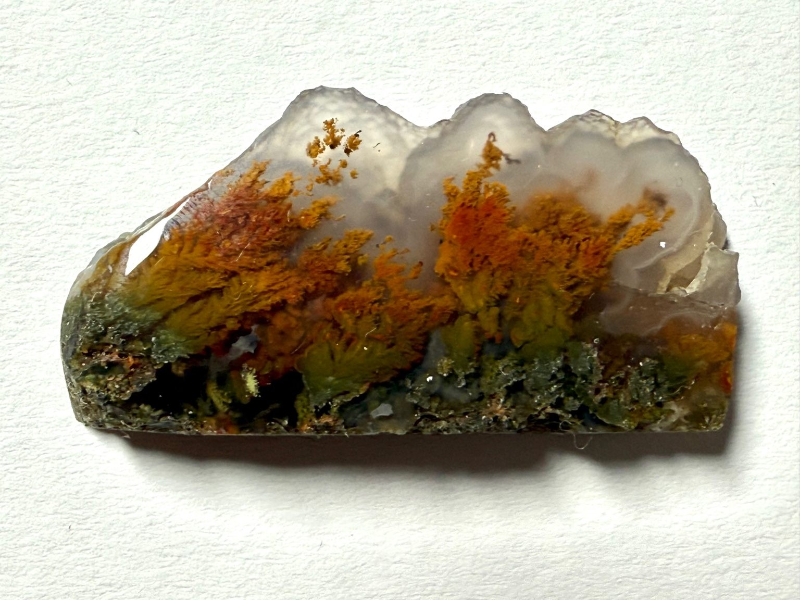
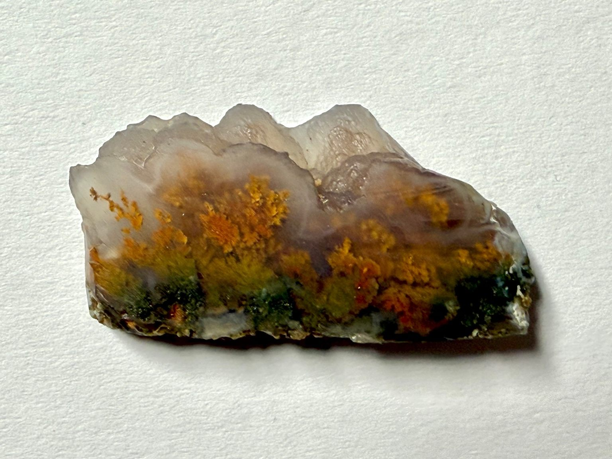
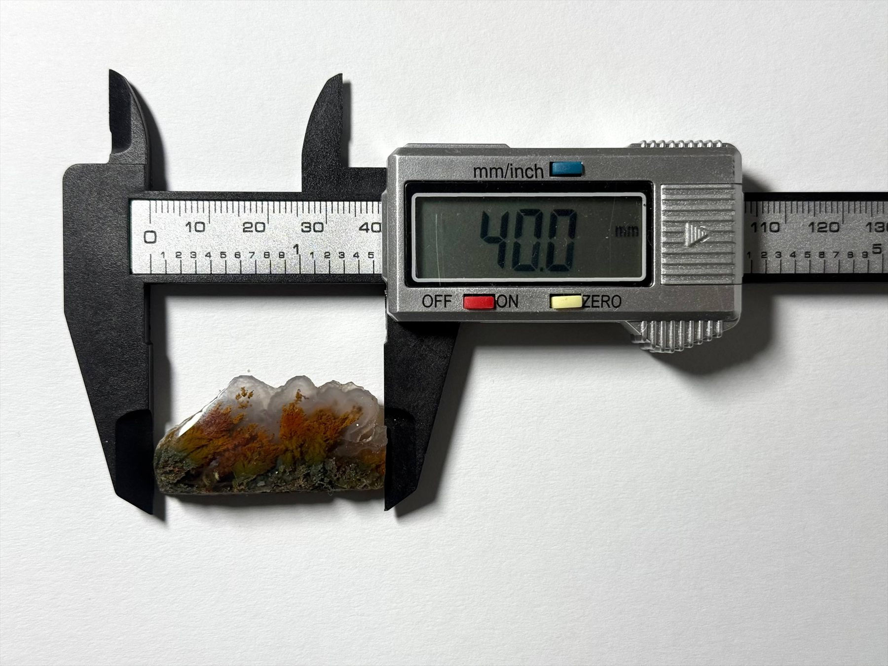

Certificate available on requestAurora Bloom is a natural dendritic agate that feels less like a mineral and more like a small memory of spring held in glass. Soft copper, misty blue and gentle green tones form a quiet scene that recalls early morning light. Dark, branching inclusions rise like blossoming trees or coral, giving the piece real depth and movement. Formed over millions of years and only polished by us, this stone is made for someone who enjoys discovering new details every time they look. Size 40.0mm

